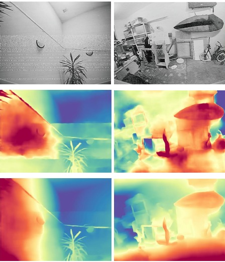

AnalogDepth: Multi-view Geometry from FPV Drones under Analog Video Transmission
Analog video transmission (VTX) remains widespread in FPV drones due to low latency, weight and cost, but suffers from complex spatially structured image degradation that standard AWGN augmentation does not capture. We present AnalogDepth, a parameter-efficient pipeline that adapts Depth Anything 3 to analog FPV imagery via student-teacher knowledge distillation with LoRA injected into the DINOv2 backbone, using a real noise bank built from static FPV recordings across diverse conditions.
Read paper →